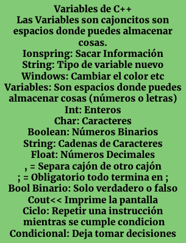

¿Que es C++?
Computadoras hablan con lenguage binario DEV-C++. C++ es un lenguaje de programación popular. C++ se usa para crear programas de computadora.
Un programa C++ esta dividido en 3 partes:
Librerias= Un grupo de instrucciones, sin librerias no podemos hacer ordenes.
Funciones y constantes= Son elementos que no van a cambiar en los algoritmos. Constantes: Numeros que guardan. Funciones y constantes se usan constantemente.
Main= (Principal) Es donde se alvergan las indicaciones.
